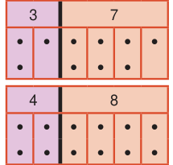
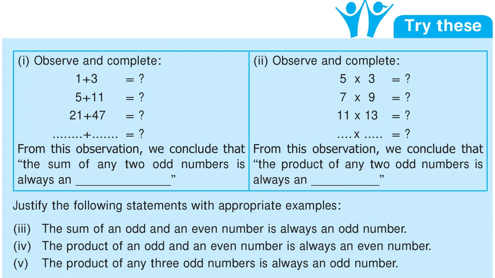
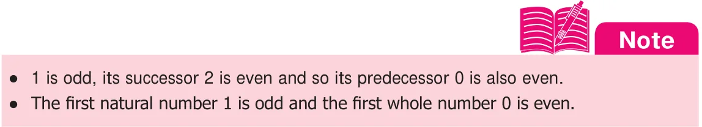

Learning Objectives:
- To identify prime and composite numbers.
- To know the divisibility rules and use them to find the factors of a number.
- To write a composite number as a product of prime numbers.
- To find the HCF and the LCM of two or more numbers and use them in real life situations.
Recap
1. Odd and Even Numbers

- A number is called an odd number if it cannot be grouped equally in twos. 1, 3, 5, 7, …, 73, 75, …, 2009,… are odd numbers.
- A number is called an even number if it can be grouped equally in twos. 2, 4, 6, 8, ..., 68, 70, . . , 4592,... are even numbers.
- All odd numbers end with any one of the digits 1, 3, 5, 7 or 9.
- All even numbers end with any one of the digits 0, 2, 4, 6 or 8.
- In whole numbers, odd and even numbers come alternatively.


2. Factors
Think about the situation:
The teacher gives Velavan two numbers 8 and 20 and asks him to write them as a product of two numbers. Velavan, with his mental math skills and also using the multiplication tables, quickly finds that \(8 = 2 \times 4\); \(20 = 2 \times 10\) and \(4 \times 5\). From this, we can say that 2 and 4 are factors of 8 and also 2, 4, 5 and 10 are factors of 20. We can also write 8 as \(1 \times 8\) and hence conclude that 1 and 8 are also factors of 8.
From the above examples, we observe that,
- A factor is a number that divides the given number exactly (gives remainder zero).
- Every number has two factors that is 1 and the number itself.
- Every factor of a given number is less than or equal to that number.
3. Multiples
Look at the multiplication table of (say) 7:
\(1 \times 7 = 7\)
\(2 \times 7 = 14\)
\(3 \times 7 = 21\)
\(4 \times 7 = 28\)
\(5 \times 7 = 35\) ...
We say that the numbers 7, 14, 21, 28, 35,... are multiples of 7.
From this, we observe that
- Every multiple of a given number is greater than or equal to that number. Multiples of 7 are 7, 14, 21, 28,... . They are greater than or equal to 7.
- Multiples of a number are endless.
Multiples of 5 are 5, 10, 15, 20,… . They are endless.
Try these
- Say True or False.
- The smallest odd natural number is 1.
- 2 is the smallest even whole number.
- \(12345 + 5063\) is an odd number.
- Every number is a factor of itself.
- A number which is a multiple of 6 is also a multiple of 2 and 3.
- Is 7, a factor of 27?
- Is 12, a factor or a multiple of 12?
- Is 30, a factor or a multiple of 10?
- Which of the following numbers has 3 as a factor?
a) 8 b) 10 c) 12 d) 14
- The factors of 24 are 1, 2, 3, ____, 6, ____, 12, and 24. Find the missing ones.
- Look at the following numbers carefully and find the missing multiples.